1. Summary
The quarter ran in control: 93 of 100 critical characteristics held above Ppk 1.33, signals ran at 1.23 times the expected rate with the excess on rules 3 and 4, every special cause was traced and closed by 30 June, no chart took limits from a gauge out of service, and 19 of 583 run starts were held at the first piece.
2. Capability Review
Capability held through the quarter on all but seven critical characteristics. 100 critical characteristics had 60 or more routine subgroups in the quarter; 93 ran at or above Ppk 1.33, and the other seven, six formed characteristics and one hole diameter, ran between 1.23 and 1.32.
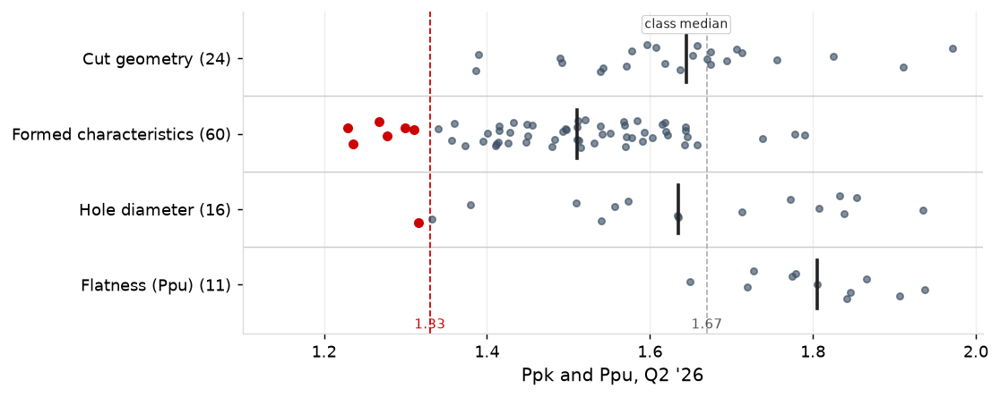
Cpk sits close to Ppk on cut geometry and flatness, and above it by 0.09 on formed characteristics and 0.38 on hole diameters, as expected given the coil offset left after centering and the wear across the sharpening interval. One characteristic, C-16315-06, ran below 1.33 on Cpk as well, at 1.31.
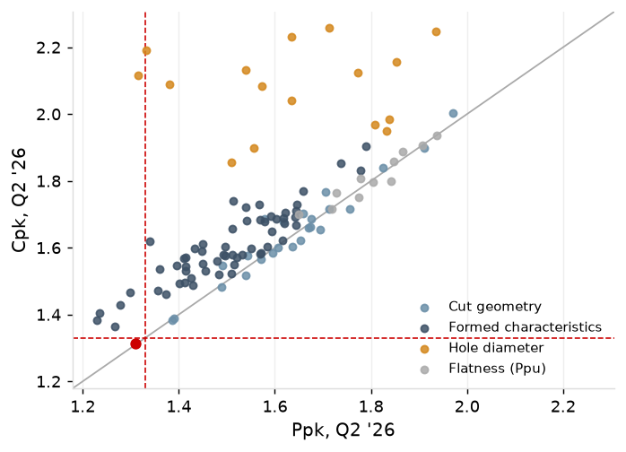
The seven characteristics that ran below 1.33 Ppk in Q2 are shown below, along with their 95% confidence intervals (the estimate of the true Ppk, given the small sample size in Q2). None carries a special cause: each is stable and falls short on its normal variation, so raising its Ppk takes a change to the process.
Three of these characteristics are flagged as needing to be reported to the customer: C-15731-06, C-37007-06, whose Q2 confidence intervals lie wholly below 1.33 Ppk, and C-16315-06, whose Cpk is also below 1.33.
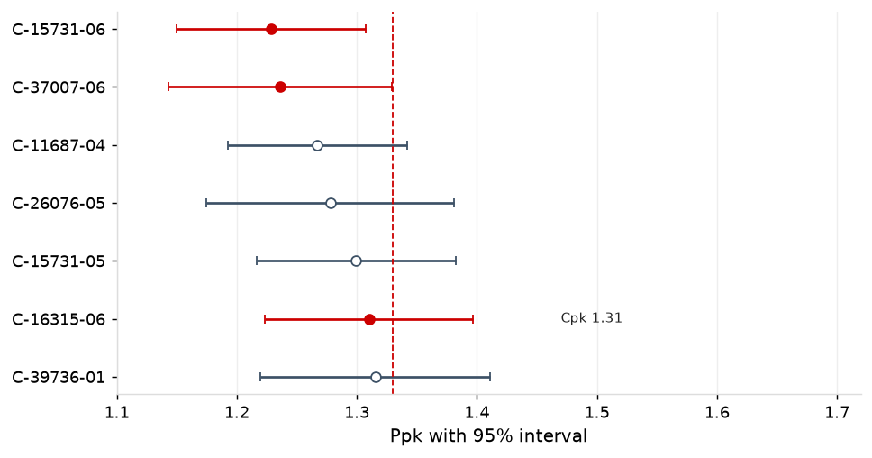
Burr and pin fail rates in Q2 ran within the yearly interval: burr at 1,346 per million pieces checked this quarter against 1,160 to 1,203 before it, and pins at 845 against 734 to 1,062.
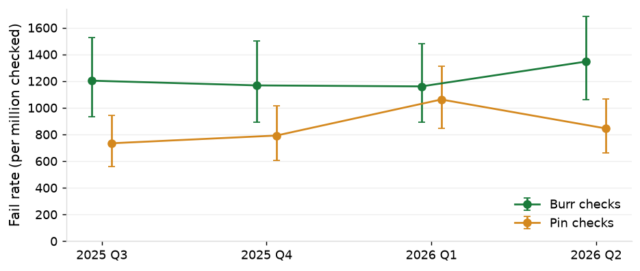
3. SPC Review
Signals and Causes
In Q2, the variable characteristic charts (X-bar and R, three-way, and regression) raised 3,396 signals: 18 were the first signal of a special-cause event, 400 followed on from those 18 events (i.e., the charts kept producing signals from the same special cause event), and 2,978 had no assignable cause. The per-stroke tonnage charts signaled 139 times, stopping the press each time, 112 with a special cause finding and 27 with no assignable cause.
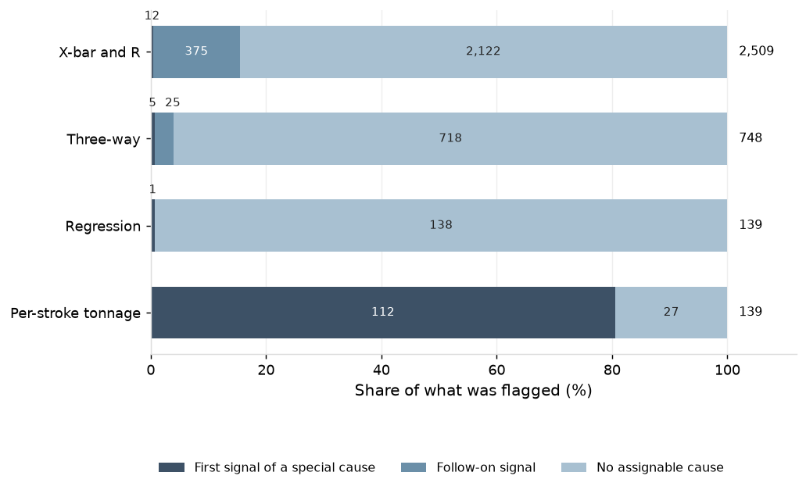
The variable characteristic charts traced 18 special causes across Q2, with their timeline laid out below.
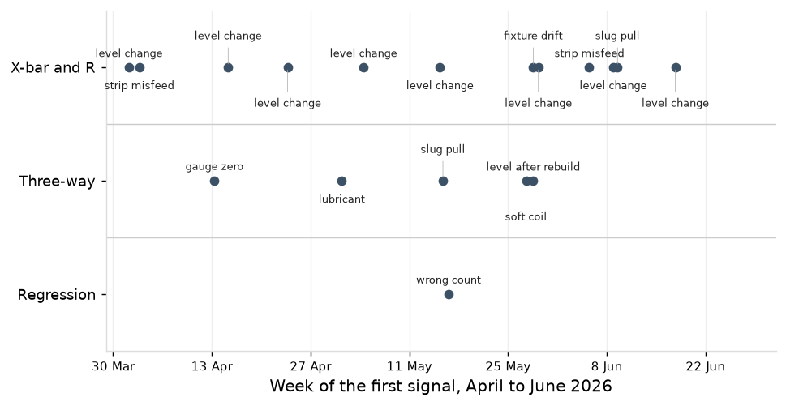
130 signals were traced to a special cause over the quarter. The variable characteristic charts most commonly found special causes related to a die at a new level after sharpening or rebuild (9) and faults related to strip misfeed, slug pull, gauge zero, or lubricant issue (6).
| What was caught | Chart | Events | Alarms |
|---|---|---|---|
| Die at a new level after sharpening or rebuild | X-bar and R, three-way | 9 | 379 |
| Fixture drift (F-14026) | X-bar and R, three-way | 1 | 30 |
| Strip misfeed, slug pulling, gauge zeroing, lubricant | X-bar and R, three-way | 6 | 7 |
| Sharpening logged at the wrong count (PR-06) | regression | 1 | 1 |
| Soft coil (C-15731-07) | coil-change | 1 | 1 |
| Slug pulling, worn and chipped punches | per-stroke EWMA and channel share | 112 | 112 |
The per-stroke charts stopped the presses 139 times on 23.2 million strokes, 112 on a finding: 68 (61%) due to slug pulling, 23 (21%) due to chipped punches and 21 (19%) due to worn punches. PR-03 carried 18 of the 27 stops with nothing found.
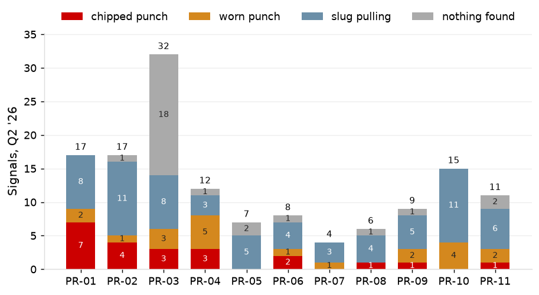
Observed vs. Expectations
Signals with no assignable cause ran at 1.23 times the expected rate, broadly across the plant; the excess is on rules 3 and 4 on the regression and X-bar and R charts, as in the control chart design study.
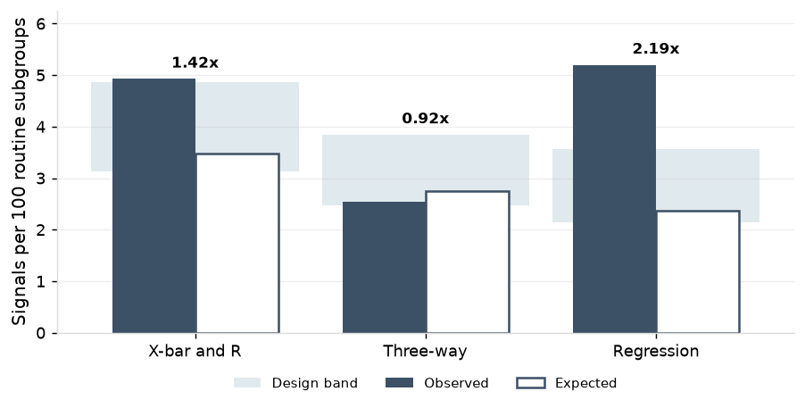
By press, signals with no assignable cause at PR-04, PR-11 and PR-03 ran furthest above expectation, at 1.67, 1.48 and 1.41 times, and PR-08 and PR-10 below it, at 0.71 and 0.79.
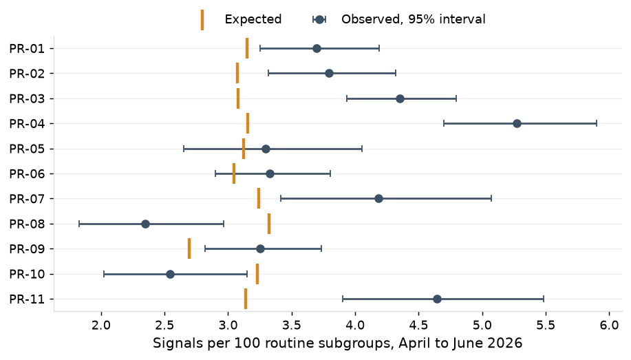
Control Limits
In Q2, 53 new limit sets were issued and 13 of 369 verifications failed. Two baselines are stale: C-23264-03 has been in baseline for 211 days with 21 of 25 subgroups, and C-34479-05 for 103 days with 38 subgroups but three of its ten coil changes.
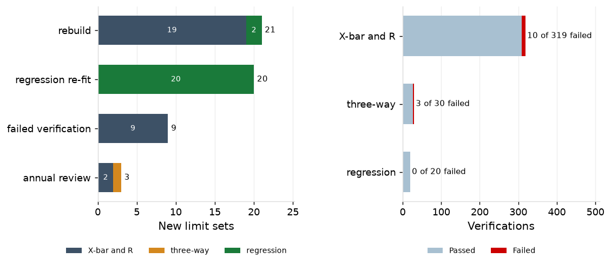
Measurement Systems
There were 52 fixture studies in the quarter. 44 (85%) had a gauge R&R (%GRR) under the 10% threshold and were within 2.8 points of their previous study. The eight studies that were above the 10% threshold are shown below.
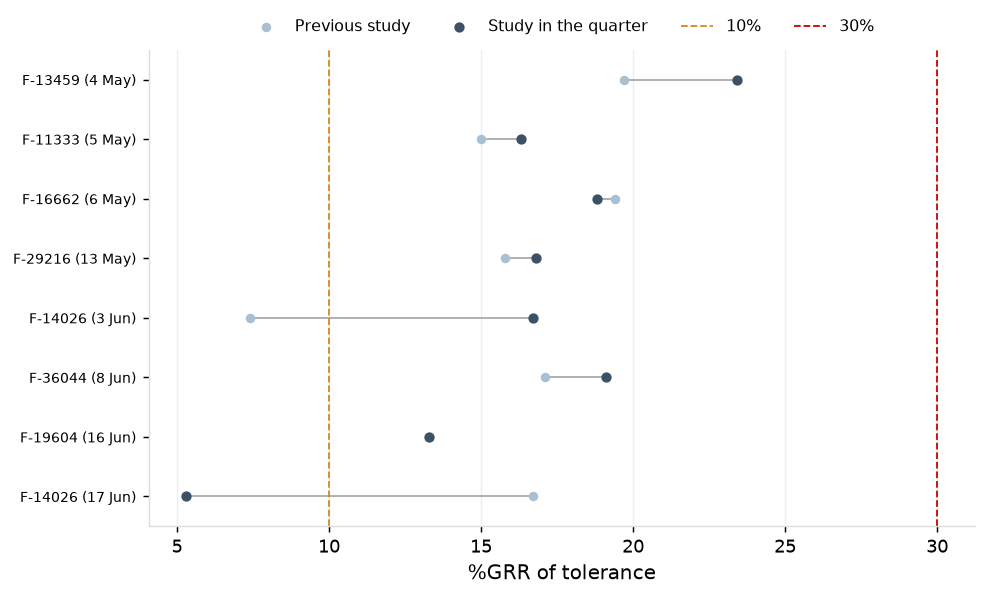